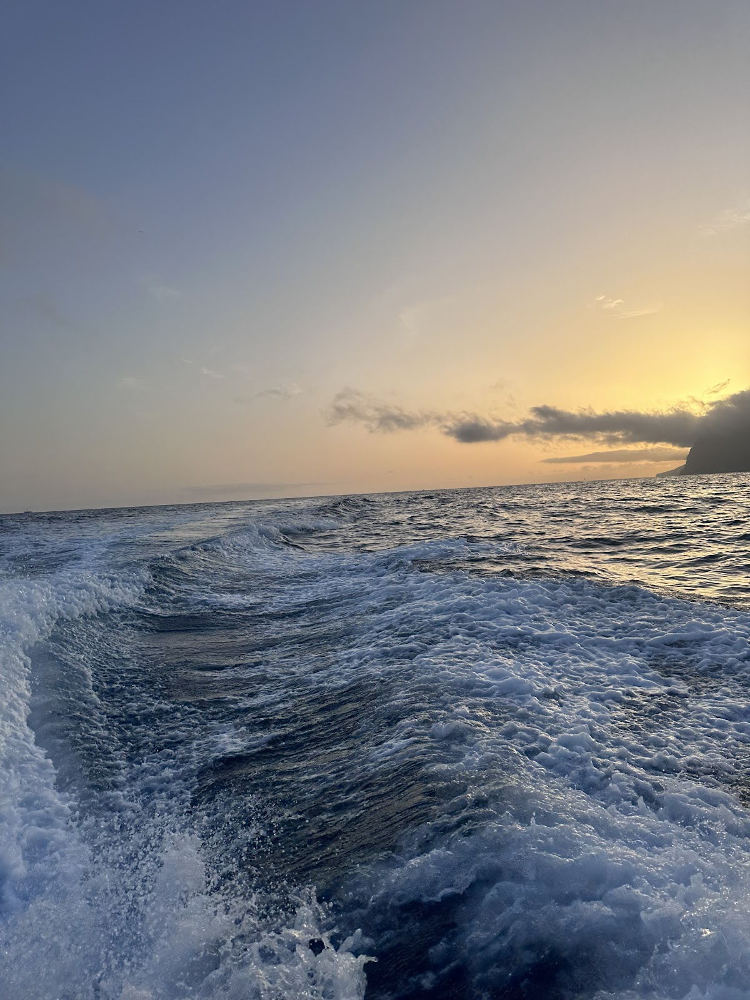
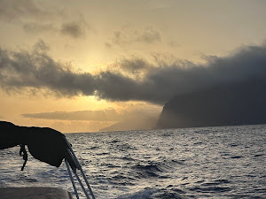
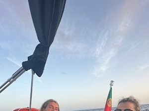

★★★★★
“Sometimes we forget how lucky we are. This tour was a great way to disconnect, appreciate the Madeira coast and enjoy a spectacular sunset. It's worth it. The crew was very friendly and contributed to making the whole experience even more enjoyable. I recommend it.”



Timoteo Gomes · July 31, 2026
Google review
★★★★★
“Excellent boat trip! The crew was very friendly and professional, the boat was comfortable, and the experience was very enjoyable. I recommend it to anyone who wants to enjoy a good time at sea.”
sara silva · July 31, 2026
Google review
★★★★★
“We took a private boat tour in Madeira, accompanied by a guide team consisting of a father and his two sons – and it was an absolute highlight of our vacation. The three of them worked together seamlessly, warmly, and professionally. You could immediately tell that their passion and experience combined. The excellent drinks, delicious food, and fresh, perfectly ripe pineapple were particularly noteworthy – simply fantastic. The boat trip was sporty and fast, but always considerate and safe. It struck the perfect balance between action and relaxation. There were two or three opportunities to swim – anyone who wanted to could go in the water; it was all very straightforward. The onboard toilet was also a real plus. We had a blast the whole time and felt completely at ease. We're certain of one thing: if we're ever back in Madeira, we'll definitely be back!”
Remo Grüniger · July 31, 2026
Google review
★★★★★
“What a wonderful day! We opted for the three hour trip which was very reasonably priced. Luigi and family (including Dad who made the best Guacamole ever - secret ingredient honey!) were so friendly and welcoming and couldn’t do enough for us. We saw some sights, swam in the sea with the SUP board and snorkels, had a lovely lunch and as many drinks as we wanted. The boat itself was pristine - the best boat for this price I have been on. We ended the day at the front of the boat whilst the driver drove us very fast - the kids loved it! Thanks ever so much I would highly recommend but book directly if you can as if you book via a site, they take an exorbitant amount of money. Thanks again! Rebecca and family!”
Lane End Chandlery · July 31, 2026
Google review
★★★★★
“We had an unforgettable and absolutely amazing time! The crew were incredibly kind and attentive, and we even got to take the helm for a while. An absolute must when visiting Madeira! ”
Ilyos Ineichen · July 31, 2026
Google review
★★★★★
“Amazing boat trip! We had such a great time together and the whole experience was perfect. A special shoutout to our skipper, Paco, who was incredibly friendly, professional, and made the trip even more enjoyable. Highly recommend! ”
Manon Nguyen · July 31, 2026
Google review
★★★★★
“Wir haben eine private Bootstour auf Madeira gemacht, begleitet von einem Guide-Team bestehend aus einem Vater mit seinen zwei Söhnen – und es war ein absolutes Highlight unseres Urlaubs. Die drei waren super eingespielt, herzlich und professionell zugleich. Man merkt sofort, dass hier Leidenschaft und Erfahrung zusammenkommen. Besonders hervorzuheben sind die hervorragenden Drinks, das leckere Essen und die frische, perfekt gereifte Ananas – einfach genial. Die Bootsfahrt war sportlich und schnell, aber immer rücksichtsvoll und sicher. Genau die richtige Balance zwischen Action und Entspannung. Es gab 2–3 Möglichkeiten zum Schwimmen – wer wollte, konnte ins Wasser, alles ganz unkompliziert. Auch die Toilette an Bord ist ein echter Pluspunkt. Wir hatten durchgehend Mega-Spaß und haben uns bestens aufgehoben gefühlt. Für uns ist klar: Wenn wir wieder in Madeira sind, kommen wir definitiv wieder!”
★★★★★
“Luigi and his brother and father were wonderful hosts. We had a delightful time, great food and drinks. 100% recommend.”
Response from ChifbayThank you so much, Rebecca, for your kind words! It was a real pleasure to welcome you and share this experience with you. We’re delighted that you enjoyed the food, drinks, and the time spent with our family. Your recommendation truly means a lot to us. We hope to see you again for another unforgettable sunset on the water! 😊
★★★★★
“Fantastic sunset cruise and crew were lovely. Great snacks and champagne and lots of shared knowledge about the Island. Beautiful music and a spotlessly clean yacht- very luxurious and allowed us to create really special Memories. The chance to swim in the ocean and to see the sunset on Madeira…priceless. All finished off with a souvenir video recorded by drone and edited to music of your choice. Worth every penny! A real must if you are visiting Madeira.”
Response from ChifbayDear Jo, Thank you so much for your beautiful review. Having you on board was just as special for us. We will remember not only the sunset, but also the lovely moments we shared with you. Knowing you left with such wonderful memories means a lot to us. We hope to welcome you aboard again one day. The Chifbay Team ⚓
★★★★★
“A spectacular experience along the island's coast. Very attentive and helpful staff. There was never a shortage of drinks and good cheer. I highly recommend this boat trip.”
Avelino Paulo Nóbrega · July 24, 2026
Google review
★★★★★
“An experience to repeat, it was fantastic, without a doubt I recommend it for a pleasant, relaxed moment in the best company.”
Dalila Nunes · July 24, 2026
Google review
★★★★★
“Wonderful. It was unforgettable! Very friendly and attentive staff. I recommend it!”
Patricia Nobrega · July 24, 2026
Google review
★★★★★
“We chose this sunset boat tour for a very special occasion, as it's where we got engaged. It will definitely remain the highlight of our trip. The boat is beautiful, comfortable, and very well maintained. Our hosts were welcoming, attentive, and truly helped make the experience even more special. They even captured the moment with a drone video, which is such a wonderful keepsake for us. Drinks and a snacks were included, and the guacamole was especially delicious! We highly recommend this experience to anyone looking to enjoy a beautiful sunset in a peaceful and elegant setting. Thank you again for helping make this moment so memorable.”
Sabrina Di Girolamo · July 24, 2026
Google review
★★★★★
“Fantastic 3 hour trip with Chifbay! Immaculate boat, amazing service & one of the best guacamoles i’ve tasted made fresh on board by our skipper! Nothing was too much trouble and my mother, son and husband all enjoyed our trip! We had flexibility on swimming for as long or as little as we wanted. Use of a paddleboard and even drone footage provided! A superb professional well organised experienced. Highly recommend!”
jane price · July 24, 2026
Google review
★★★★★
“Une expérience absolument magique, que je recommande les yeux fermés ! Tout était parfait du début à la fin. Les guides français, un père et son fils, étaient extrêmement sympathiques, professionnels et passionnés. Ils nous ont partagé de nombreuses explications tout au long de la sortie dans une ambiance très conviviale, ce qui a rendu l’expérience encore plus agréable. Le coucher de soleil était tout simplement magnifique. Nous avons également pu nous arrêter pour nous baigner, faire du paddle et profiter d’un délicieux apéritif avec boissons incluses. Le plus beau souvenir reste la magnifique vidéo réalisée avec un drone, offerte à la fin de l’excursion. Les images sont superbes et nous permettront de revivre ce moment encore longtemps. Une expérience unique, idéale en famille, entre amis ou en couple. Un immense merci pour cette soirée inoubliable ! 😊”
Response from ChifbayThank you very much, Jessy, for this wonderful commentary! We are delighted that you enjoyed the excursion, the atmosphere, the sunset, the swimming, the paddleboarding, and the aperitif. It was a real pleasure to share this moment with you. We hope the video will allow you to keep beautiful souvenirs of this evening for a long time. Looking forward to welcoming you again! 😊
★★★★★
“Absolutely Worth It. Couldn’t have asked for a better experience. The whole team was amazing and genuinely made my birthday so special. Thank you for all the effort and for giving us memories we’ll always cherish. Can’t wait to be back! Review of: Swim at Private Madeira Coast Cruise with Snacks and Drinks”
S R · July 15, 2026
Tripadvisor review
★★★★★
“Wonderful luxury boat trip. Fantastic 3 hour trip with Chifbay! Immaculate boat, amazing service & one of the best guacamoles i’ve tasted made fresh on board by our skipper! Nothing was too much trouble and my mother, son and husband all enjoyed our trip! We had flexibility on swimming for as long or as little as we wanted. Use of a paddleboard and even drone footage provided! A superb professional well organised experienced. Highly recommend!”
janeprice1981 · July 15, 2026
Tripadvisor review
★★★★★
“This is a must when in Madeira!. Amazing sunset trip along beautiful Madeira coastline. Family run business, so the little touches made this even more special. Champagne, snacks, a beautiful yacht and crew were friendly and knowledgeable. Everything from booking to meeting to receiving a personalised video memoir afterwards was first rate. Worth every penny. Review of: Swim at Private Madeira Coast Cruise with Snacks and Drinks”
Joanne C · July 15, 2026
Tripadvisor review
★★★★★
“Top experience 🥰. We took a private boat tour in Madeira, accompanied by a guide team consisting of a father and his two sons – and it was an absolute highlight of our vacation. The three of them were super well-coordinated, warm, and professional at the same time. You notice immediately that passion and experience come together here. Particularly worth mentioning are the excellent drinks, the delicious food, and the fresh, perfectly ripe pineapple – simply brilliant. The boat trip was sporty and fast, but always considerate and safe. Exactly the right balance between action and relaxation. There were 2–3 opportunities to swim – whoever wanted to could get in the water, everything very uncomplicated. The toilet on board is also a real plus. We had a blast the whole time and felt in the best of hands. For us, it's clear: When we are back in Madeira, we will definitely come back! Read less Review of: Swim at Private Madeira Coast Cruise with Snacks and Drinks”
Remo · July 15, 2026
Tripadvisor review
★★★★★
GetYourGuide traveler · 🇩🇪 Germany · July 15, 2026
Verified booking · GetYourGuide
5-star rating
★★★★★
“We had a fantastic time with Hugo and Paco. They were incredibly helpful and attentive, going above and beyond to ensure we had the best possible experience, from swimming and sunset to drone video and a delicious aperitif. Thanks again, we highly recommend them!”
Victor Filliaudeau · July 10, 2026
Google review
★★★★★
“It was amazing!!!! Hugo and paco were the best. Every detail was perfect and we had the best time. Top tier service, pest poncha, amazing views and overall just a great time. Highly recommend!”
Response from ChifbayThank you so much for your 5 star review. It truly means a lot to us. We are so happy to know that you had such a great time on board. We also really enjoyed having you with us. Your kindness, good mood and amazing energy made the experience even more special. It was a real pleasure to welcome you, and we would be very happy to see you again on your next visit to Madeira. Warm regards Team Chifbay
★★★★★
“We had an absolutely amazing day on the ClifBay boat tour. Everything was perfect, the friendly and professional crew, the delicious snacks and drinks, the relaxing swim stop, and as the highlight of the day we even spotted a whole group of dolphins. Truly magical. The atmosphere on board was wonderful, and you can feel how much the team enjoys what they do. It made the entire experience unforgettable. I would recommend this tour to everyone visiting Madeira. If we could give 6 stars, we definitely would. More than worth it!”
Response from ChifbayThank you for such a beautiful review. It means a lot to know your day with Chifbay became a memory you’ll carry home from Madeira. Sharing the ocean, the smiles and those rare magical encounters is why we love what we do. Your generous “6 stars” truly touched our crew. We’d be delighted to welcome you back aboard⚓️
★★★★★
“Wonderful. It was a wonderful journey. Skipper Paco very friendly,with a contagious smile and very attentive. Hugo always careful to prepare the drinks, so nothing is missing I recommend It was unforgettable, I can't see the time to come back again. Review of: Swim at Private Madeira Coast Cruise with Snacks and Drinks”
Scenic33195508363 · June 15, 2026
Tripadvisor review
★★★★★
“Wonderful. A wonderful and relaxed experience with an excellent crew, very friendly and available. I highly recommend”
Dalila N · June 15, 2026
Tripadvisor review
★★★★★
“Great Trip - Hugo and Paco were a great pair, highly recommend to anyone visiting the island.”
Response from ChifbayThank you, Thomas. Your words really mean a lot to us. Some days at sea stay with us too, and this was one of them. We’re grateful for the trust, the smiles and the beautiful moments shared together. From all of us at Chifbay, thank you again. We hope to see you back in Madeira.
★★★★★
“Unsere Ausflug war einfach traumhaft!Sehr zu empfehlen!”
Response from ChifbayThank you so much, Elena. That means a lot to us! 🙏 So glad you had a wonderful time on the water — we hope to see you again if you ever come back to Madeira! ⛵
★★★★★
“Sehr empfehlenswert! Vater und Sohn, super hilfsbereit und bemüht einen schönen Aufenthalt auf See zu gewährleisten. Viele Sprachen möglich. Man kann sich die Tour individuell gestalten, man erhält viele Informationen wenn man das möchte. Super war die frische Zubereitung der Getränke und Snacks vor Ort, sehr lecker. Rund um eine super Tour, vielen lieben Dank.”
Response from ChifbayWow, thank you for this amazing review Franziska! It was truly a pleasure having you on board. We’re so happy you enjoyed the fresh drinks and snacks, and that the tour felt personal and flexible for you. Father and son say a big thank you! Hope to see you again someday 😊🌊
★★★★★
Giedrius · 🇱🇹 Lithuania · May 30, 2026
Verified booking · GetYourGuide
5-star rating
Reviews are imported automatically from GetYourGuide and Google as they come in (Tripadvisor is checked by hand — their site blocks automated scraping). Nothing here is edited or reworded.